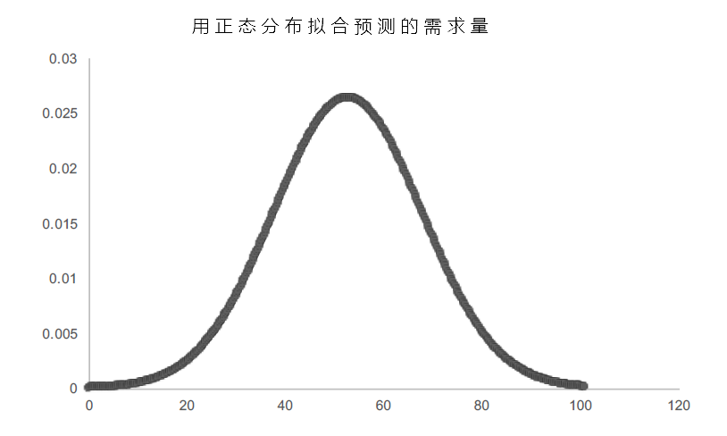
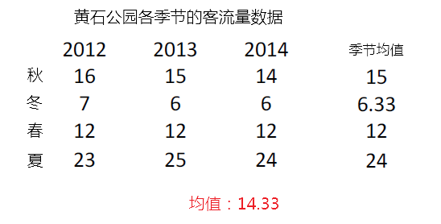
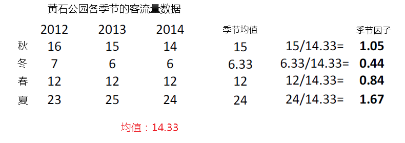
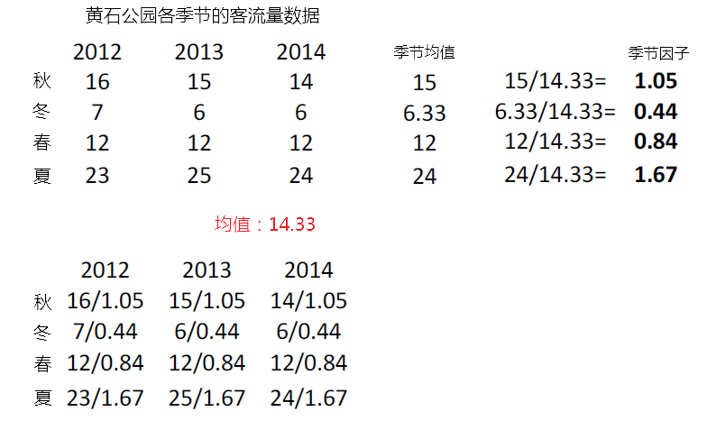
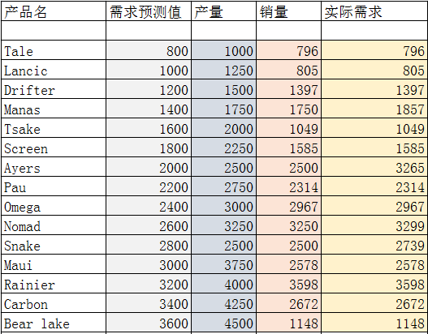

在上一篇文章《商业分析套路第一弹「客户分析」》中，我们提到了数据分析的三个主要步骤，分别是：描述性分析，预测性分析和规范性分析。接下来我们要进入的主题实际上是「运营分析」，虽然分析的主题不同，但是我们的分析步骤是类似的，同样需要从过去的历史数据中去找寻并描述规律，根据规律应用相应的预测模型对未来进行预测，最后基于预测的数据来优化我们的决策。
在这些过程中，需求预测可以说起了十分关键的作用，于是我们单独写这篇文章来介绍一些常用的需求预测方法。
首先来考虑这样一个每一个生产制造型企业都需要考虑的最基本的运营问题：
「我们需要生产多少产品？」
为了回答这个问题，我们需要知道产品的成本是多少，售价是多少，还要对市场的需求做出尽量精准的估计。
举一个简单点的例子。你在自己家楼下开了个小杂货店，每天都需要从批发商那里进一些货，然后把这些进来的货放在货架上销售。最让你头疼的问题之一就是到底每天进多少货合适？每天都有人走过路过你的小店，或许人家看到你货架上陈列的东西正好是他们家今天需要的，就直接买了，又或许是你的货物在货架上存放了好久都无人问津。
假设你就卖一种产品，新鲜牛奶，你的采购价格是3块钱一瓶，售价是5块钱，如果当天没有卖掉，就只能作报废销毁处理。每天的鲜牛奶需求是不确定的，假设你采购了100瓶。
这一天如果需求非常大，100瓶全卖完了，那么你可以赚100*（5-3）= 200块钱。
这一天如果需求一般，卖掉了60瓶，那么你不亏不赚 60*（5-3） = 40*3 = 120。
这一天如果没有需求，1瓶都没有卖出，那么你会亏100*3=300块钱。
所以，问题的关键就在于你不知道需求会是多少，你必须想一个好的办法来预测需求，以便于决定到底应该采购多少。那么有没有什么方法可以帮助你预测未来的需求呢？
答案当然是：有！因为幸运的是你有过去100天的需求数据。

从图上的数据可以看出，在过去的100天里，需求最高的时候可以达到81，最低的只有15，而平均需求为52.8。基于这样的历史数据，再来看你需要解决的问题：每天采购多少鲜牛奶比较好呢？
这个问题通常被称作「报童问题」，因为这和以前卖报纸的小贩需要考虑的问题是一样的，进的太多的报纸最后卖不掉反而赚不到什么钱，进的少了么错失了赚更多钱的机会。
类似这样的问题大量的存在于我们周围：
医疗机构在流感季节来临之前决定应该采购和准备多少防流感疫苗。
智能手机用户在不知道自己到底每个月需要消耗多少流量之前就要给自己选择一个合适的流量套餐。
人们在不知道自己健康状况的发展情况之前要给自己选择一个最合适的健康保险 。
一个好的需求预测是有时效性的，数据是可靠，预测结果应该是尽量准确的，必须有正确的计量单位，并且预测的方法应该简单易用，易于理解并付诸实践。
另外在进行需求预测时，实际上需要预测的某个时间段的需求，这个时间段我们通常称之为期间，可以是一年、一个月、一星期、一天，甚至某些需求一秒也是可以的。在没有实际发生之前，需求的量具体会是多少可以说都是随机的，因此，一个好的需求预测不只是一个数值，而是一个数据的分布情况。比如天气预报的温度会有最高温度和最低温度，我们预测需求的时候可以给出平均需求和标准差。
–基于历史数据规律的简单需求预测
下面就进入实践环节：怎么样才能基于上述的历史数据对未来进行合理的预测。
我们先从比较简单的方法入手，假设往期的需求只有高、中、低三类，需求量达到80的算高，50的是中，20的是低，并且，进一步，我们认为（实际上可以根据历史数据统计出来）高需求的发生概率为20%，中等需求发生的概率为70%，低需求的发生概率为10%。在此前的「客户分析」中，我们也曾提到过，类似这样的概率分布问题，是一种离散型的分布，每一种可能型的概率之和为1。
对于任何的概率分布，我们一般可以通过均值和标准差来描述。对于离散型概率分布，均值的计算方式为：
0.2 * 80 + 0.7 * 50 + 0.1 *20 = 53
标准差的计算方式为：
( 0.2 * ( 80 - 53)^2 + 0.7 * (50 - 53)^2 + 0.1 * (20 - 53)^2 )^0.5 = 16.16
意味着对未来需求的预测值基本上是在53左右，上下浮动16。
至此，我们通过一种相对简化的方式的预测了未来的需求量。而实际情况，明显不只有这三种，而是会有N多个，每一个需求情况的概率都是一个相当较小的值，类似于股票价格或者降雨量，实际结果是连续而不是离散的，对于这种情况，一种是我们刚刚采用的分类分组的方法，另一种则采用连续型的概率分布方法，用图形表示如下：
如下图，X1和X2所围成的这部分面积，表示的就是预测值在X1和X2之间的概率，而整个阴影部分的面积正好为1。
最常见的连续性概率分布是正态分布，它的图形如下，通常称之为钟型曲线：
–移动平均和指数平滑
再一次回到你的小店里，我们有鲜牛奶的历史需求数据如下：
很明显，这些数据是相对离散的，但是你对于我们刚才采用的分类分组这种粗略的方法预测出的未来需求并不是很满意，那么，有没有更好一点的办法呢？
答案还是：有的！我们可以使用移动平均法。
移动平均法的思路很简单，就是利用此前n个期间的数据预测接下来的期间，可以用MA(n)表示。例如，我们每次只考虑前10个期间：
那么，在这种MA(10)的情况下，样本的均值为：49.6，标准差为：10.28。我们可以用这两个统计数据来描述样本的特征，也可以用来预测未来的需求。
在做预测时，采用的均值和样本均值相同，如果预测结果是呈正态分布的，那么标准差需要做如下调整：s = s + s / n^0.5。也就是用来预测的标准差为：10.28 + 10.28 / 10 ^0.5 = 13.53。这里调整标准差时用到的数据叫标准误(Standard Error)，标准误表示的是抽样的误差。因为从一个总体中可以抽取出无数多种样本，每一个样本的数据都是对总体的数据的估计。标准误代表的就是当前的样本对总体数据的估计，标准误代表的就是样本均数与总体均数的相对误差。标准误是由样本的标准差除以样本容量的开平方来计算的。从这里可以看到，标准误更大的是受到样本容量的影响。样本容量越大，标准误越小，那么抽样误差就越小，就表明所抽取的样本能够较好地代表总体。
同理，可以计算出MA(20)：
均值： 51.96
标准差：9.63
调整后的标准差：11.77
还可以用所有100个历史期间数据进行计算，MA(100)：
均值：52.81
标准差：13.37
调整后的标准差：15.1
最后可以用一个正态分布图型来体现我们预测的需求量的分布：

移动平均法的优点是：容易理解，容易实现，提供了稳定的需求预测。
移动平均法的缺点是：对于有明显趋势的数据预测部准确，不是严谨的因果模型，无法解释为什么未来的需求会是这样的。
采用移动平均法还有个问题是：怎么样确定选取最近多少期间的数据进行预测比较合理？
实际上，我们并不愿意抛弃所有的历史数据，而是最好有一个方法可以在计算的时候给最近的数据赋予更高的权重，而对很久以前的数据赋予较低的权重，这种方法我们称之为「指数平滑」。
「指数平滑」需要做的就是引入一个加权因子，也称为平滑系数，它是移动平均法的一个变种。他的基本算法为：
下期预测数 = 本期实际数平滑系数 + 本期预测数（1-平滑系数）
实际上是下面这个公式的变形：
下期预测数 = 本期预测数 + 平滑系数*（本期实际数-本期预测数）
平滑系数的取值必须大于0小于1，平滑系数的大小可以根据过去的预测数和实际数的比较而定，差额大，则平滑系数可以取大一些，则意味着近期的影响力越大；反之，差额小，则平滑系数可以取小一些，意味着近期的影响力相比远期的区别不大。
在得到预测结果之后，我们需要有方法来验证我们的预测是否靠谱。我们定义误差为预测的需求值减去实际的预测值，那么我们有三种测算误差的方法：MAD，MSE和MAPE。
下面是我们对 MA(10)和 MA(20)分别计算 MAD，MSE和MAPE的结果：
可见，在这个例子中，使用MA(20)的结果更准确一些。我们的目标就是要让误差尽量小，误差越小，就能说明我们的预测越精准。
–有明显变化趋势的需求预测
我们上面所举例子中的数据有一个特点，就是没有明显的趋势，而是稳定在某一个区间波动，对于这样的数据规律，采用移动平均和指数平滑进行预测并无不可，然而对于有明显增长或减少趋势的数据采用这样的方法就会存在较大的误差，如果趋势是增加的，移动平均法得到的结果会低于实际值，如果趋势是减少的，移动平均法得到的结果会高于实际值。
对于有明显趋势的数据预测方式，实际上在「客户分析」中已经介绍过了，就是线性回归法。这里再举一个例子。
我们有美国黄石公园每一年的客流量数据，需要根据这个数据预测未来的客流情况：
从图上可以明显的看出整体的客流量是呈现增长的趋势的，我们分别以过去50年和30年的数据拟合两种结果出来瞧一瞧：
根据这个拟合结果，2017年的客流量预计能达到3450636人次。
根据这个拟合结果，2017年的客流量预计为3494226人次。
我们把这个例子展开，再预测维度再细一些，考虑春夏秋冬四季不同的客流量有何规律，并且怎么样根据这个规律进行预测。
第一步计算样本的均值。
第二步计算不同季节的均值。

第三步计算季节因子。

第四步将季节因子代入原始数据，消除季节因素的影响。

第五步根据消除季节因素影响后的数据设计预测算法。
根据数据的分布情况，基本上是稳定在某个区间内，因此可以采用我们上面介绍的移动平均法来进行预测。我们快速的用MA(4)的方法（基于前四个期间的移动平均法）来预测一下2015年冬天的客流量。这里就不进行过程的演算了，我们得到的不考虑季节因素的2015年冬天的客流量预计为13.91（千人次），接着进行最后一步：还原季节因素的影响。计算过程也很简单，只要用预测的结果去乘以季节因子就可以了：13.91 * 0.44 = 6.11。因此我们可以预测的2015年冬天黄石公园的客流量为6110人次。
–新产品需求预测
以上的例子有一个特点，就是历史数据和要预测的需求是针对同一件事情或是同一个指标，而实际上做市场营销时往往会涉及到新产品销量的预测，这种问题又应该如何解决呢？
我们还是通过一个例子来回答。
有一家专门卖鞋的公司，该公司已经在卖的产品的历史数据如下：

需要特别注意的是，需求和销量是不同的，销量是实际销售的数量或是实际能满足的需求。比如实际需求是1000双，但是在货架上可以供销售的只有800双，那么销量最多也就只有800双。
根据上图可以看出，有一些实际需求大于预测值，有一些小于预测值。我们把每一种产品的需求的实际值除以预测值（A/F）作为指标进行计算，并且进一步计算这个A/F的均值和标准差：
假设通过前期市场调研、销售分析、公司高层讨论后的初始预测销量为：1000。在假设预测结果是符合正态分布的情况下，对标准差进行调整后得到如下正态分布：
这个图形就可以很好的用来拟合该公司对即将推出的新产品的需求预测。
最后我们做一个简单的总结。一开始提出了一个很基本的问题：「我们应该生产多少产品？」。为了回答这个问题，我们需要对市场需求进行预测，于是我们分别介绍了简单概率需求预测、移动平均、指数平滑、线性回归等需求预测方法，并进一步考虑了需求预测中碰到的季节性因素影响应该怎么处理，最后介绍了新产品的需求预测方式，通过正态分布来拟合我们最终的需求。最后希望大家可以通过本文的学习，今后遇到类似问题的时候可以找到一个比较适合的解决方法。